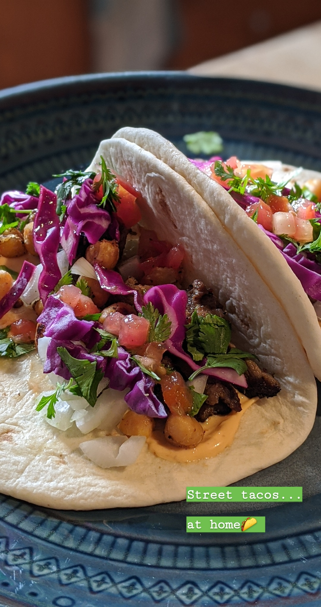

Taco

Description
This is my go-to fish taco sauce. You can make it ahead and keep it in the fridge. You can substitute any hot sauce for the Sriracha.
Ingredients
- 3 tablespoons sour cream
- 2 tablespoons mayonnaise
- 1 tablespoon lime juice
- 1/2 teaspoon garlic powder
- 1/2 teaspoon Sriracha sauce
Steps
- Fry meat
- Mix sour cream, mayonnaise, lime juice, garlic powder, and Sriracha together in a bowl until smooth.
- Put cheese on tortilla
- Put mix on tortilla
- Put meat on tortilla